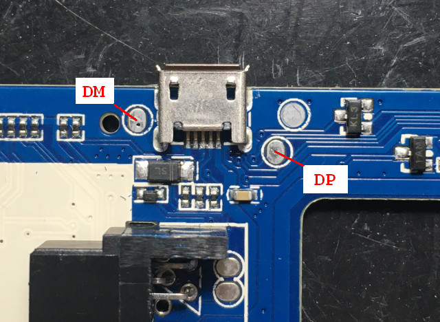
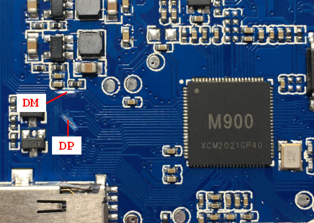
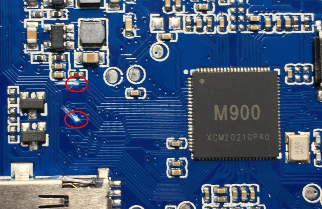
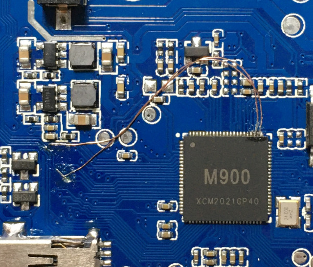
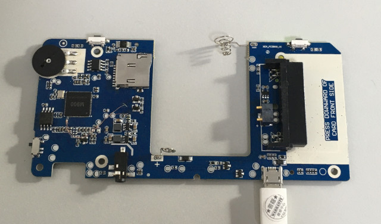

原本的USB D-是接到PD0、D+是接到PD9





$ sudo dmesg -c
[50302.847603] fc3000_usb 1-1: new full-speed USB device number 116 using xhci_hcd
[50302.996616] fc3000_usb 1-1: New USB device found, idVendor=1f3a, idProduct=efe8, bcdDevice= 2.b3
[50302.996620] fc3000_usb 1-1: New USB device strings: Mfr=0, Product=0, SerialNumber=0
$ lsfc3000_usb
Bus 001 Device 116: ID 1f3a:efe8 Onda (unverified) V972 tablet in flashing mode